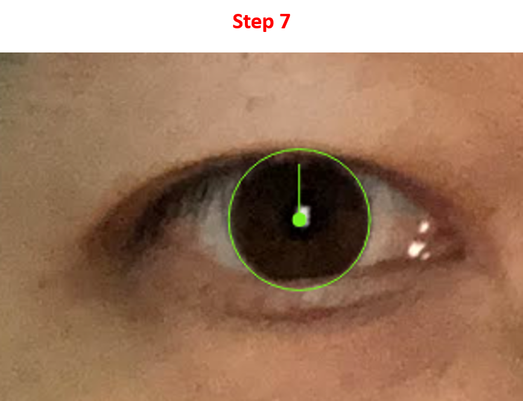

Instructions:
Step 1:Wait for the model to be loaded. At first it will blink with "Loading....", will stop with "Complete!"
Sometimes, it would take about one minute or longer.

Step 2:Choose photo. Or you can just skip this step and use my photo for testing.
Step 3:Choose target eye by moving the green bounding box over the eye and click.
You can adjust the bounding box size by clicking on the + or - button
Step 4:Choose marker.
Step 5:Click on the eye to track the contour of iris. 1st click mark the first point over the edge of iris, 2nd click mark the second point over the edge of iris.
Step 6:Move the mouse to get the proper fit of the circle to iris edge. Click to confirm.
Step 7:Move the mouse up to let the vertical green line contact with the edge of upper eyelid. Click to confirm.

Step 8:Click on the marker. 1st Click mark the left side end of the marker, 2nd click mark the right side end of the marker. The default
setting is that the marker is 1cm wide. If marker is not avalible, just randomly click two time on the marker picture.
Step 9: A button should appear. Click it to start the automatic measurement.
There are two other buttons that can redo the manual measurement.
Step 10: To save the result. Click the "Save Results" at the button.